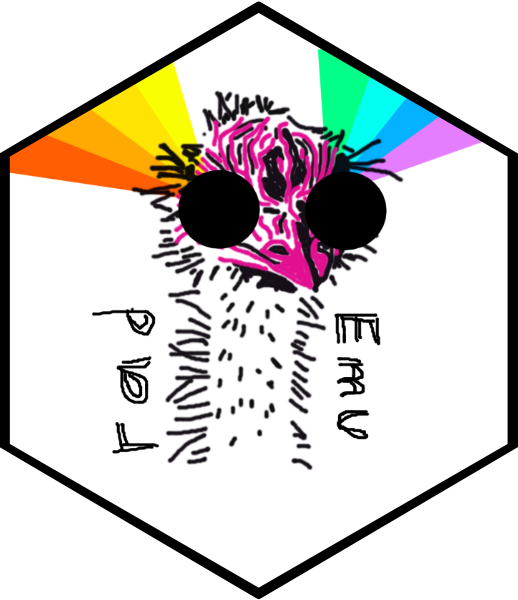

Quick start with `radEmu`
Sarah Teichman and Amy Willis
2026-03-13
Source:vignettes/quick_start.Rmd
quick_start.RmdSetup
First, we will install radEmu, if we haven’t
already.
# if (!require("remotes", quietly = TRUE))
# install.packages("remotes")
#
# remotes::install_github("statdivlab/radEmu")Next, we can load radEmu.
In this vignette we’ll explore a dataset published by Wirbel et al. (2019). This is a meta-analysis of case-control studies of colorectal cancer, meaning that Wirbel et al. collected raw sequencing data from studies other researchers conducted and re-analyzed it.
Wirbel et al. published two pieces of data we’ll focus on:
- metadata giving demographics and other information about participants
- a mOTU (metagenomic OTU) table
data("wirbel_sample")
# encode control as the baseline level
wirbel_sample$Group <- factor(wirbel_sample$Group, levels = c("CTR","CRC"))
dim(wirbel_sample)
#> [1] 566 14
data("wirbel_otu")
dim(wirbel_otu)
#> [1] 566 845We can see that we have samples and mOTUs. We will subset to samples from the Chinese study.
Differential abundance analysis with radEmu
We now are ready to fit a radEmu model with the
emuFit() function! This will take 1-2 minutes to run, so we
suggest you start running it and then read below about the
arguments!
mod <- emuFit(Y = wirbel_otu_ch, formula = ~ Group + Gender, data = wirbel_sample_ch,
test_kj = data.frame(k = 2, j = 1), verbose = TRUE)
#> Estimating parameters
#> Performing Wald tests and constructing CIs.
#> Running score test 1 of 1 (row of B k = 2; column of B j = 1).
#> Score test 1 of 1 (row of B k = 2; column of B j = 1) has completed in approximately 69 seconds.Some of the important arguments for emuFit() are the
following:
-
formula: This is a formula telling radEmu what predictors to use in its model. We are using Group, which is an indicator for case (CRC) vs control (CTR), and Gender. -
data: A data frame containing covariate information about our samples. -
Y: A matrix containing our observed abundance data (e.g., counts or depth measurements). The rows give the observations (samples), and the columns give the categories (taxa/mOTUs). Note thatYdoesn’t have to be integer-valued (counts)! -
test_kj: a data frame describing which robust score tests you want to run.kcorresponds with the predictor(s) that you want to test (if you don’t know what order your predictors appear in your design matrix, use the functionmake_design_matrix()with yourformulaanddatato check!) andjcorresponds with the taxa that you want to test (checkcolnames(Y)to see the order of the taxa). If you wanted to test the Group covariate for all taxa then you could settest_kj = data.frame(k = 2, j = 1:ncol(Y)). -
verbose: do you want the code to give you updates as it goes along?
In the example above we only test the first taxon, because each test for a data set this size takes approximately 30 seconds. Typically you’ll want to test all taxa that you are interested in, so you may need to leave this running for a few hours, or check out the “parallel_radEmu” vignette to see how you could parallelize these score tests if you have access to additional computing resources.
Now that we’ve fit the model and run a robust score test for the
first taxon, we can look at the results! The parameter estimates and any
test results are in the coef part of the
emuFit object.
head(mod$coef)
#> covariate category category_num
#> 1 GroupCRC Streptococcus anginosus [ref_mOTU_v2_0004] 1
#> 2 GroupCRC Enterobacteriaceae sp. [ref_mOTU_v2_0036] 2
#> 3 GroupCRC Citrobacter sp. [ref_mOTU_v2_0076] 3
#> 4 GroupCRC Klebsiella michiganensis/oxytoca [ref_mOTU_v2_0079] 4
#> 5 GroupCRC Enterococcus faecalis [ref_mOTU_v2_0116] 5
#> 6 GroupCRC Lactobacillus salivarius [ref_mOTU_v2_0125] 6
#> estimate se lower upper score_stat pval
#> 1 1.23098896 0.5112357 0.2289855 2.2329925 2.89652 0.08877102
#> 2 -0.35705361 0.4792791 -1.2964233 0.5823161 NA NA
#> 3 -0.02530219 0.7645786 -1.5238487 1.4732444 NA NA
#> 4 0.87675897 1.1872869 -1.4502806 3.2037986 NA NA
#> 5 0.32201218 0.4147375 -0.4908584 1.1348828 NA NA
#> 6 2.27550157 0.6843873 0.9341271 3.6168760 NA NAThe first taxon in our model is Streptococcus anginosus, which has a log fold-difference estimate of . We will interpret this to mean that we expect that Streptococcus anginosus is times more abundant in cases of colorectal cancer compared to controls of the same gender, when compared to the typical fold-differences in abundances of the taxa in this analysis.
We could similarly interpret the log fold-differences for each taxon in our analysis.
For Streptococcus anginosus we have a robust score test p-value of . This means that we do not have enough evidence to reject the null hypothesis that the fold-difference in abundance of Streptococcus anginosus between cases and controls is the same as the typical fold-difference in abundance between cases and controls across all taxa in this analysis. When we say ``typical” here we mean approximately the median fold-difference across taxa.
Now you are ready to start using radEmu! We recommend
our other vignettes for a deeper look using radEmu,
including for phyloseq or
TreeSummarizedExperiment objects, with clustered data, and
in parallel.